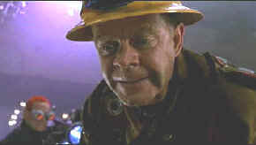

|
Mystery Men(SE)/C+,A |
|
Universal/1999/122m/ANA 185 |
The extraordinary aspects of Mystery Men suggest some wacky potential for this comedy about a bunch of hapless would-be super heroes. The script, after a decent set-up, is very ordinary, however, and when the characters dissolve to nothing more than action stick figures, Mystery Men is sapped of its vitality. The movie is like Austin Powers without his mojo, so to speak.
|
 |
|
The Shoveler gets forked. ©Universal |
Captain America, the crime fighting super hero savior of
Champion City, is going through a slow period. He's cleaned up
the city so well, there just aren't any villains left to inspire
him. His inspiration is helping parole the most arch of his
former enemies. The plan goes predictably afoul, and its up to a
zany Mystery Men to save the day for Champion City.
Chief inspiration is in the varied persona of the super heroes.
I mean, how could you fail to love The Shoveler, an underground
worker by day and an underground super hero by night. Mr. Furious
has his moments of divine explosiveness. And The Blue Raja shows
potential behind the array of kitchenware weaponry. The less
successful characters tend to weigh down the fun of Mystery
Men.
The bowler is all too boring, though she does strike with a
couple of great one-liners. Spleen is predictably disgusting
Captain Amazing gets a great commercial set-up, but fails to
find spiritual comic flight in the face of Mystery Men villainy. The
byplay between the character is where any real humor resides.
Kinka Usher makes his directing debut with Mystery Men. Usher
does a great job in making the film look like a comic book.
Another graduate from the commercial advertising directing
school, Usher misses on making Mystery Men soar above a script
that falls back on furious action with little substance.
William H. Macy is just great as The Shoveler. He handles his shovel with the panache of a great Samurai action star and
delivers lines in deadpan and sincere style to winning
effect. Ben Stiller is Mr. Furious. His outbursts explode from
red faced eruptions with some wonderful results and some equally
tiring repetition. Hank Azaria learns to handle the spoons and
forks pretty well in trying to find an edge to The Blue Raja,
but his character is left short of great comic realization. Jeneane
Garafalo wears an armor of wisecracks but look awkward holding a
bowling ball as The Bowler. Keith Mitchell as Invisible makes an
appearance simply to be ridiculed. Wes Studi does his studied
stiffness as The Sphinx. Greg Kinnear makes the most of Captain
America and Geoffrey Rush fails to shine as Casanova
Frankenstein.
Mystery Men is a sensational DVD. The comic book production
design is brought to amazing life. The many night sequences are
alive with bright highlights. Catch the reflections off the
brims of the cops' hats. Every Mr. Furious's male prostitute
leather outfit has the sheen approaching the best of PVC. This
is as sharp as any DVD I have ever seen with no edge enhancement
visible. Maybe Invisible Boy worked on the transfer. The depth
of information is astounding. Colors pop off the screen with
maximum saturation. Directionality of the Dolby Digital 5:1 surround is splendid
with exciting effects springing through every part of the home
theater.
Packaged in special edition clothes,
Mystery Men includes second audio commentary from director
Usher, entertaining deleted scene, a Spotlight on Location and
other typical SE accoutrements.

Preston Sturges was Hollywood's resident comic genius for more than a decade. His movies are timeless. Click on his image to read all about it.
Check out the Movie Poster Archive for short bios and images of Susan Hayward, Kirk Douglas, Katharine Hepburn and many more. This month's featured star is Clark Gable.
Imaging
Science Foundation
The Imaging
Science Foundation promotes proper standards in home theater
viewing. ISF trained technicians offer monitor calibration
services to consumers. The difference in a properly
calibrated monitor can be astounding. Click on the image to find
an ISF member near you.
HOT
LINKS
DVD
Verdict
They
may be judgmental, but that's the point, isn't it. Lots of DVD
reviews plus news and more
The
Home Theater Forum
Looking for
lively and helpful exchanges on home theater, DVD, movies. Visit
this friendly site and get a hardy welcome.
Home
Theater Reference Reviewing System

When you read a DVD review it's of utmost importance to know
what equipment is being used to evaluate quality. Click on the
projector to find out more.